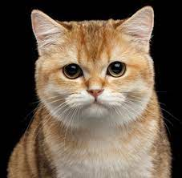

|  |
| British Shorthair |
BEHAVIOR
The British Shorthair is an intelligent cat breed that is easy –to- train. This smart breed adapts easily to new surroundings, and enjoys being around people, even children. The British Shorthair gets along well with other animals like rabbits, dogs, other cats, and even horses. This breed tends to be clumsy, yet is moderately active. This is a kind and sweet-natured cat breed that is devoted to family. That said, they do not enjoy being carried around or being picked up. The British Shorthair does well with being an indoor cat.
The British Shorthair does best as an indoor cat. This cat breed thrives on affection, and plenty of cat toys. This cat breed is proud, and enjoys positive clicker training. It is non-aggressive with other cats. Eye tearing may be a problem with this cat breed. Inactive cats tend to pick up weight, and are prone to more medical conditions, like liver disease. Daily grooming needs to be a priority with this cat breed.
Exercising cats is more difficult than with dogs, yet cat parents can do so by purchasing certain cats toys to promote exercise. Litter box training needs to start during kittenhood. All cats are super clean animals, so it is very easy to litter box train. Litter boxes for cats need to be kept clean, or your cat may not use it. All cats will need parasite control and routine health care throughout its life. This means vaccinating your cats. This is an important part of keeping your cats healthy throughout their lives. Your British Shorthair will also need to be spayed or neutered. Consult with your veterinarian, and always consider veterinary health insurance for your cat.
GROOMING
The British Shorthair needs daily grooming for skin and coat health. Because this breed is a shorthair cat breed, taking care of this cat breed is super easy. This cat breed has a short and smooth coat. All cat breeds will groom themselves several times throughout the day. Daily grooming is necessary because it limits the amount of hair that your cat will consume. This helps limit the development of hairballs. Your British Shorthair will enjoy being groomed.
Ears should be checked weekly for cleanliness and sensitivity. If there is a build-up of wax and dirt, organisms can lead to an ear infection. Consult with your veterinarian about ear cleaning.
Healthy cats need minimal bathing with a gentle cat shampoo. Your cat will need dental care as well. By feeding a high-quality cat food, and having professional dental cleanings with your veterinarian throughout your cat’s lifetime, your British Shorthair will have less of a chance of developing gingivitis or gum disease. Small and frequent effective hygiene habits will make a big difference in maintaining healthy skin, healthy teeth, and good overall health. Look for environmentally safe pet products that have natural ingredients.
HEALTH PROBLEMS
Hypertrophic Cardiomyopathy: This is a heart muscle disorder where the heart walls of the left ventricle thicken. This results in the walls becoming stiffer. This is a common primary heart disease in cats. It tends to noticed at around 3 months to 17 years of age. Most cats will be middle aged when this disorder occurs. This disorder tends to affect males more than females, and it is an inherited genetic defect. Symptoms may include difficulty breathing, weakness or paralysis of the hind limbs. Fluid may also accumulate in the lungs, and in the space between the lungs and chest wall. Veterinary treatment will aim at improving cardiac function, and reducing blood clots. There is a good longterm outlook for mildly affected cats. Consult with your veterinarian for advice.
Gingivitis: This is when the gums become inflamed due to bacterial plaque. At this stage the ligaments and bone are not infected. Gum color in cats will change from a light pink to red or purple. The gum edge wills well. Symptoms include bleeding and bad breath. This can be reversed with proper teeth cleaning. That said, it can worsen and result in periodontitis. Consult with your veterinarian for an effective treatment plan. Polycystic Kidney Disease. This occurs when the polycystic kidney has numerous cysts within the functioning part of the kidney resulting in enlarged kidneys. Consult with your veterinarian if your cat vomits frequently, has a decreased appetite, and increased thirst or urination.
NUTRITION
The British Shorthair cat breed will need a high-quality diet. That said, a high-quality diet that is appropriate for the specific life stage of the cat is necessary. Protein as an ingredient, needs to come first. Dry cat food is a popular choice because it promotes healthier gums and teeth. Yet wet food is more often recommended by veterinarians because it provides more moisture to cats. Cats don’t drink a lot of water and tend to sometimes get dehydrated. Wet cat food also has its benefits. By choosing a well-known name- brand cat food that has scientific backing, as well as quality control, cat parents can be assured that they are providing a well-balanced diet.
All cat breeds need high- quality fat and protein in their diets. They also need amino acids, including taurine that cannot be found in either human food or dog food. There are also numerous specialty diets for your cat that are formulated specifically for certain medical problems like urinary tract disorder, obesity, or kidney disease.
All cats do well by being fed twice daily. During kittenhood, kittens will need to be fed every few hours. Growing kittens need more calories, nutrients, vitamins, protein, and calories. Your cat should be able to enjoy a peaceful meal in a quiet corner of the house. Some cat parents prefer to leave cat kibble out 24/7. When looking for a high-quality cat food, here’s what to look out for:
- No low-quality fillers
- No artificial additives
- Low grade ingredients or toxic ingredients
- All cat food has to be meat-based because all cats are carnivores
- No garlic
- Plant-based ingredients should be listed after the protein-based ingredients